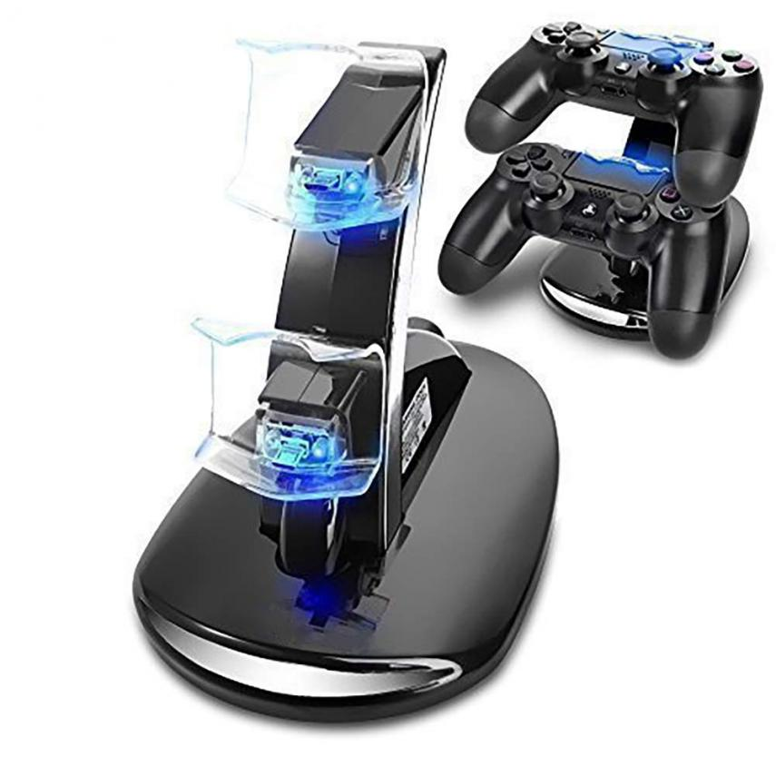
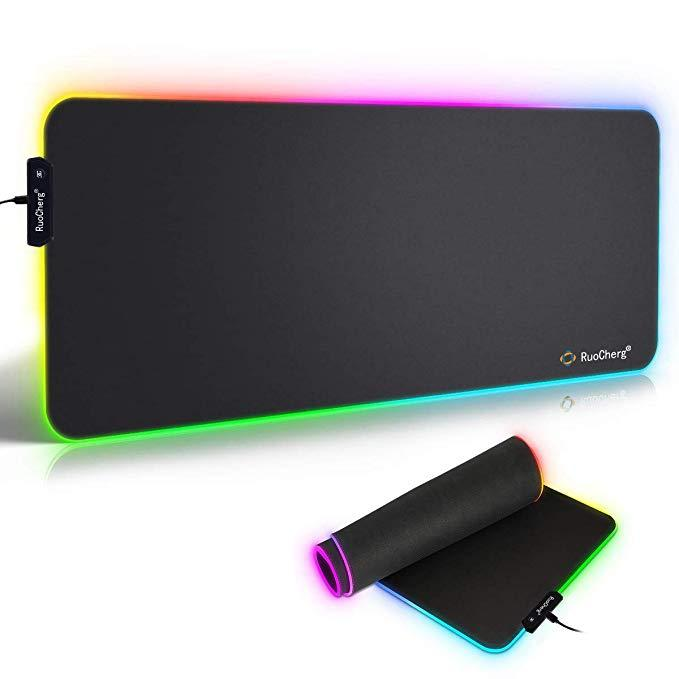
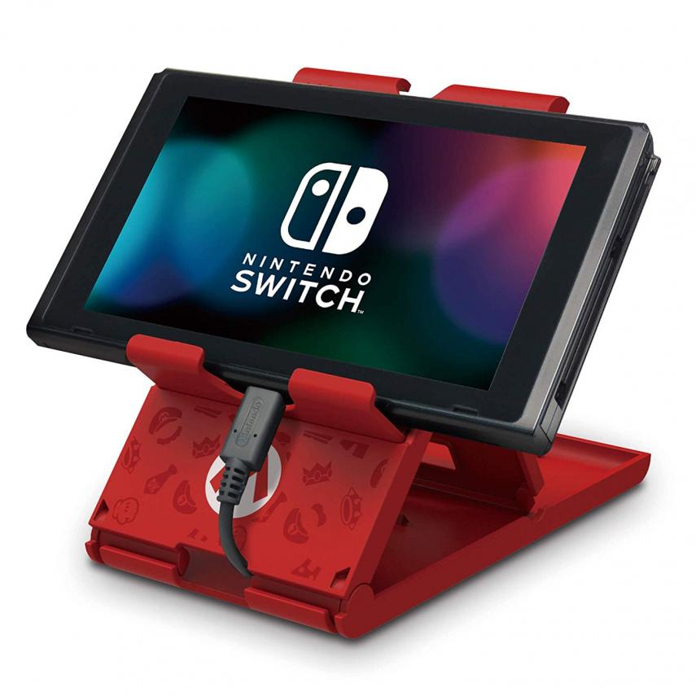
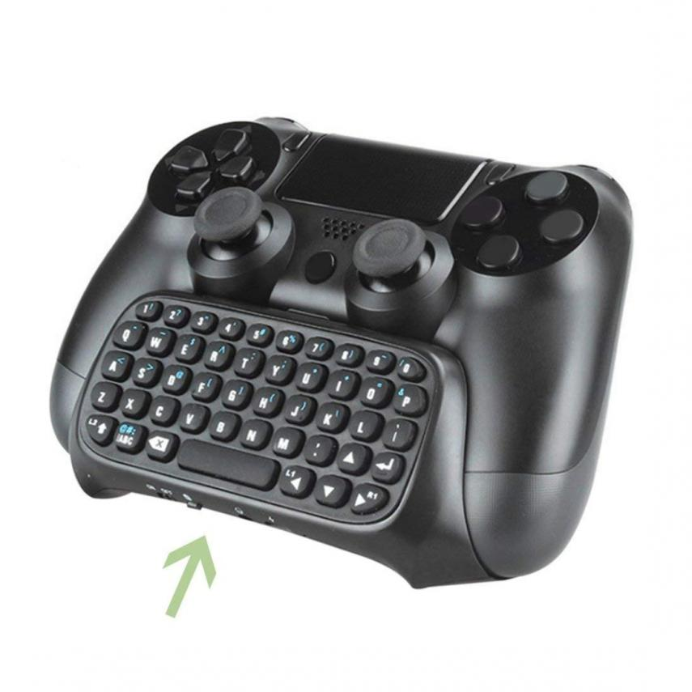
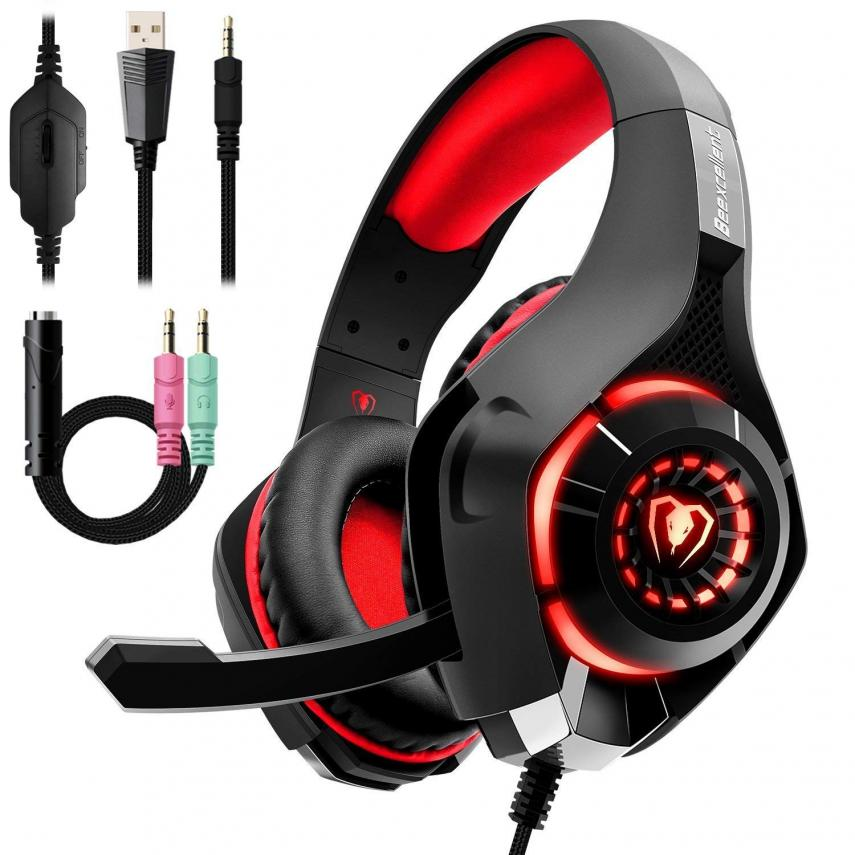

➯ ¡HOLA!
Disfrutar de los videojuegos es todo un placer, pero mejor se hará si cuentas con el equipo adecuado. Los accesorios y complementos te otorgarán las facilidades necesarias para sacarle el máximo partido a tus títulos favoritos, es por ello por lo que hemos decidido hacer una breve recopilación con algunos de los accesorios gaming que más partido puedes sacar mientras disfrutas de los videojuegos.
Soporte cargador doble para PS4
Este soporte de carga dual para mandos de PlayStation 4 es uno de los accesorios para consola más demandados por los usuarios de la consola de Sony. Este objeto permite cargar dos mandos DualShock 4 a la vez y al no estar vinculado a la consola se pueden cargar con ella completamente apagada. Cuenta con protección a la sobrecarga y resistencia a las altas temperaturas. La luz parpadea durante la carga, una vez que deja de parpadear, la carga estará completa. Es mucho menos engorroso que estar conectando el cable usb a la PS4.
Enlace: ¡Clic aquí! 👈

Alfombrilla de Ratón RGB Extra Grande
Esta gran alfombrilla para ratón gaming es uno de los mejores añadidos que te ayudarán a disfrutar de tus partidas en ordenador. Cuenta con una gran superficie (780x300x4) y no es nada aparatosa, ya que se puede doblar o enrollar por si se viaja con ella o desea guardarse. La superficie de la alfombrilla es antideslizante y resistente al agua. Además su diseño es sobrio, pero cuenta con múltiples modos de luces, lo que animará tu set up y le dará un toque mucho más interesante, animado y profesional.
Enlace: ¡Clic aquí! 👈

PlayStand Super Mario
Este artilugio te permitirá apoyar tu Nintendo Switch donde sea. Si quieres jugar al modo portátil con la consola reposada y solo te apetece jugar con los Joy-Cons sueltos, este accesorio es lo que andas buscando. El artículo es oficial de Nintendo y cuenta con varios diseños como el de Super Mario, Zelda o uno negro más formal. Además, mientras juegas podrás cargar la consola, por lo que no gastarás batería. Se pliega al completo y tiene tres ángulos de ajuste.
Enlace: ¡Clic aquí! 👈

Mini teclado adaptable para PS4
Este miniteclado es perfecto para solucionar los problemas de escritura en tu PS4. Se adapta perfectamente a los controles del DualShock 4 de PlayStation y cuenta con una aplicación y retirada muy sencillos y fáciles de manejar. Este accesorio te permitirá chatear con tus amigos sin ningún problema y a gran velocidad, sin tener que preocuparte de buscar las letras con los joysticks del mando, un proceso mucho más lento y costoso.
Enlace: ¡Clic aquí! 👈

Auriculares gaming con micrófono
Estos auriculares son unos de los más vendidos dentro de Amazon y poco más vas a poder encontrar que guarden mejor relación calidad precio. Cuentan con micrófono incorporado y son válidos para PlayStation 4, Xbox One y PC.
Sonido nítido y claro que se consigue aislando el sonido de fuera con sus almohadillas de 0,6 pulgadas de grosor. Además resultan muy livianos, ya que apenas pesan más de 200 gramos. Con un precio tremendamente recomendable, estos cascos son una verdadera ganga.
Enlace: ¡Clic aquí! 👈

Ir arriba